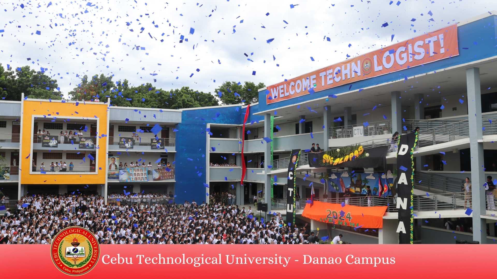

𝐒𝐮𝐠 -𝐚𝐥𝐚𝐩𝐚𝐬 𝐬𝐚 𝐂𝐓𝐔 𝐃𝐚𝐧𝐚𝐨! Students are buzzing with excitement as they gather at the quadrangle for the grand opening celebration of CebuTech Danao, Sug-Alapas 2024 with the theme "Navigating Success: Unbolting Academic Path." 𝐒𝐮𝐠 -𝐚𝐥𝐚𝐩𝐚𝐬 is the Cebuano term for "ğ¥ğ¢ğ ğ¡ğ 𝐮𝐩," symbolizing a warm beacon of hope. Dr. Decem Suladay, Dean of Instruction, welcomes everyone to the new academic year with a glow of enthusiasm. Dr. Rosemary L. Almacen, the esteemed Campus Director, delivered an encouraging and motivational message to the students, faculty, and staff. In her speech, Dr. Almacen emphasized the importance of embracing new challenges and opportunities with a resilient spirit. "Today marks not just the start of a new academic year but a new chapter in our collective journey toward excellence," she stated. "As we step into this year, let us carry with us the commitment to learn, grow, and contribute meaningfully to our communities." Dr. Almacen also took the opportunity to introduce the key administrative officials who will be vital in guiding the campus through the academic year. Prof. Mark Joseph Bernardo, Student Affairs Director, then introduced the new set of Supreme Student Government officers of A.Y. 2024-2025. SSG President Hon. John Philip Maglangit expressed his excitement for this school year and shared a few shining reminders on the activities the mother organization prepared for the students. The program ended with a burst of colors, signifying the radiant school year awaiting everyone with the dance troupe litting up the stage with their performance of hit songs by BINI and the uplifting jingle "Danao Here and Now." The CTU Danao Campus looks forward to a productive and successful year, driven by the collective efforts of its dedicated faculty, dynamic leadership, and enthusiastic student body. 𝐌𝐚𝐥𝐢𝐩𝐚𝐲𝐨𝐧𝐠 ğ©ğšğ ğ›ğšğ¥ğ¢ğ¤ 𝐬𝐚 𝐂𝐓𝐔 𝐃𝐚𝐧𝐚𝐨!
Sug-alapas sa CTU Danao
Published on August 27 2024
Source:https://www.facebook.com/ctudanaoofficial
